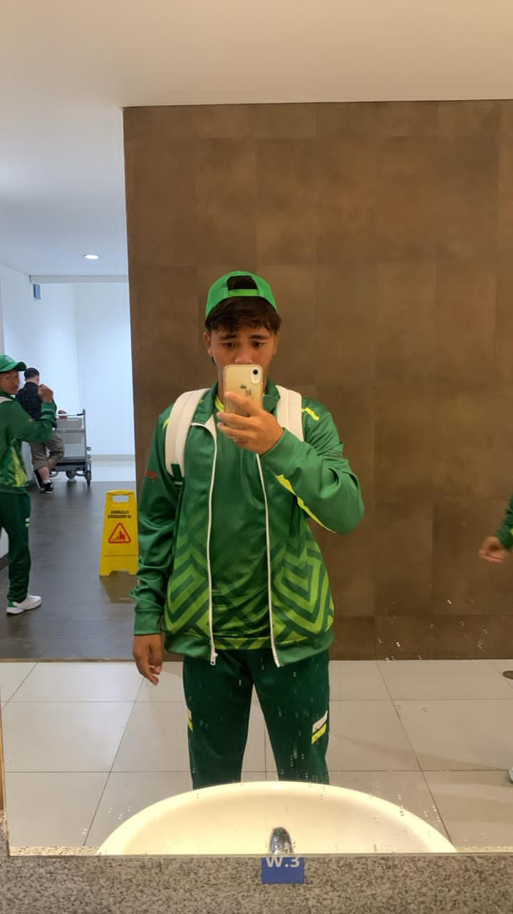
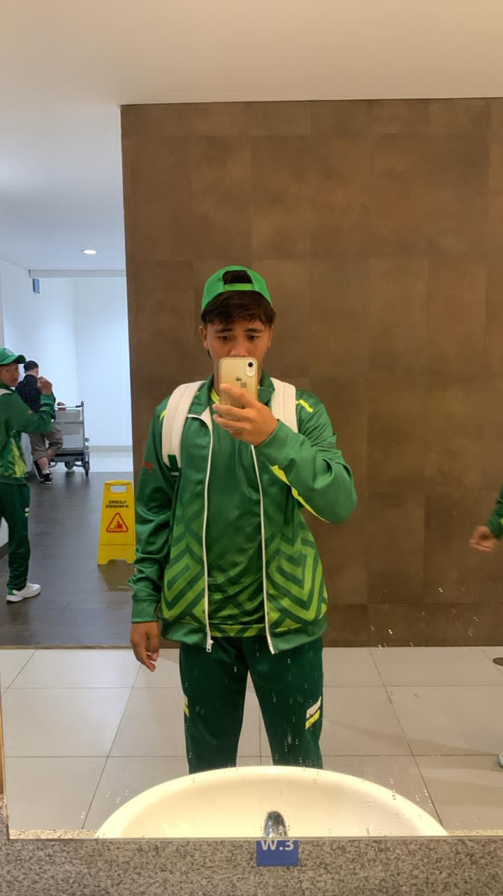

Sayangku, atlet kebanggaanku 🥺⚽
Meskipun kali ini ut belum bisa bawa pulang kemenangan di POPNAS, ut udah menang kok di mataku, di hatiku, dan di mata semua orang yang tahu perjuangan e ut.
Nggak papa kalah, soalnya yang dilihat ul itu bukan hasilnya, tapi gimana perjuangan e ut di lapangan 🤍
Ut tau nggak?
Liat ut di lapangan, pake seragam Jawa Timur dan semangat e ut yang nggak pernah padam — rasane campur aduk: bangga, haru, kagum, semua nyampur jadi satu 😭✨
POPNAS cuma dua babak, tapi perjuangan e ut masih panjang banget.
InsyaAllah ul bakal tetep jadi supporter nomor satunya ut, walaupun ul nggak bisa ikut nonton di tribun hehe 😚
Ut, ndak semua pemenang itu pegang piala.
Kadang pemenang itu yaa… ut sendiri — yang berani berjuang sampai akhir ⚽🔥
Mungkin kali ini hasilnya belum sesuai harapan ya, tapi ut udah melangkah jauh lebih dari yang banyak orang bisa.
Berangkat mewakili Jawa Timur di POPNAS itu bukan hal kecil, itu bukti kalau kerja keras, doa, dan semangat e ut nggak pernah sia-sia 💪
Dan ut, nggak ada kata kalah buat orang yang terus berjuang.
Berarti POPNAS kali ini belum rezeki, tapi ul tetep buanggaaa banget sama ut 😭💚
Ul tau kok, ut pasti sempet kecewa. Tapi ul juga tau, ut itu kuat.
Dan ul di sini bukan cuma bangga pas ut menang, tapi juga bangga banget pas ut jatuh dan bangkit lagi — dan itu yang selalu bikin ul kagum banget. Literally selaluuu. 🥺
Atlet kebanggaankuuu, pemain bola andalanku,
next time kita rayain kemenangannya bareng yaaa (Aamiin 🤲)
Keep fighting, my favorite player ever ⚽🔥❤️
Nggak cuma Ul, tapi semua yang sayang sama Ut ikut bangga banget.
Sekarang waktunya istirahat dulu, recharge energi.
Selamat pulang ya, atlet kebanggaan Ul 💙
 
